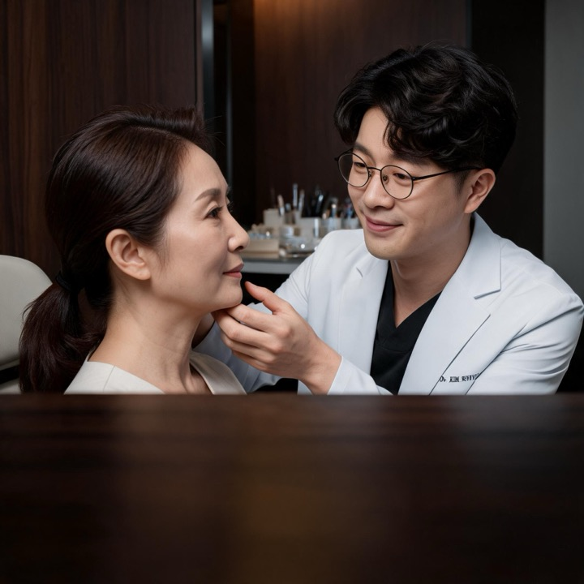

全球首部面部骨骼轮廓整形专业教科书的出版

通过最佳的医疗服务与美丽解决方案，
提供超越美丽的价值
一家优秀的医美机构，应当展现过硬医疗技术、患者安全保障、资质认证与扎实的临床信誉。
凡是与美的医生致辞，重点呈现医疗院长金善旭的专科领导力、专业成就、学术资质、学会履历、跨境执业认证以及以患者为中心的理念。
这是求美者选择医美项目时建立信任的核心要素。
欢迎来到 凡是与美
沉淀多年临床经验，依托前沿医美技术，以精准技艺发掘你的独特之美。
凡是与美，是陪伴您一生的美丽与自信伙伴。专业医美守护，赋予新生期许，让您满怀自信拥抱生活。
整形外科
专家
医生 金善旭
凡是与美始终以专业立院：面部骨骼轮廓整形领域权威教科书，持续投入团队学术研究，并获得卫生主管部门官方认证。从学术沉淀到临床实践，我们以过硬的专科实力，守护每一位求美者的安全与信任 —— 这就是整形外科医院应有的专业底气。
以增进每位患者的幸福为目标
通过提供个性化的美丽方案，
我们承诺以安全与专业为基础的信任与可靠。
凭借丰富的临床经验与学术知识，
我们的专业医生与专科专家
充分考虑每位患者的独特需求与特点，为您带来最佳效果。
结合生命周期的不同阶段，我们提供最有效的治疗以维持每位患者的美。
我们始终陪伴在您身边，对患者的美承担终身责任，
履行我们作为美丽乐园的使命。
所有手术均由凡是与美的持证执业医师主刀，配备专职麻醉团队与护士陪护。术前有完整医学评估（体检+面诊），术后有结构化恢复方案，绝无“来了就上台”的情况。
凡是与美为国内正规医疗执业机构，可提供《医疗机构执业许可证》及主刀医生执业证书编号，欢迎来院前在线核验。我们不租借场地、不外包手术，所有手术均为本院团队全程操作。
术前会签署明确的手术知情同意书与责任边界；术后若出现非预期情况，优先由原主刀团队安排修复方案。修复政策与时限会在合同中逐条写清，绝不口头承诺，所有售后保障有据可依。
我们采用一口价全包报价模式，手术费、接机送机、住宿酒店、术后护理等所有费用分开列明，条目清晰、透明公开。签约前会提供完整的费用明细清单，全程无隐形消费、无到店临时加价。具体价格需根据个人医美项目、定制方案评估后精准报价。
定金主要用于锁定手术档期、预留酒店及配套服务资源，保障客户行程及手术安排。若因我方原因无法按期开展手术，定金全额无条件退还。因个人原因取消、改期的退改规则，均会提前写入合同，规则透明、有据可依。
全程配备专属陪护人员，除专业医疗陪护、术后护理陪护外，还可提供本地向导服务，涵盖美食探店、热门景点打卡、术后休闲消遣等，全程有人陪同，无需独自应对就医、出行问题，轻松就医、安心恢复。
全程提供双语陪同翻译服务，覆盖接机、面诊、术前沟通、手术全程、术后复查、日常出行等全场景，零沟通障碍。同时 WhatsApp、微信 24 小时在线值守，提供中文、英文及东南亚本地语多语种客服，随时解答问题。
整体停留时长根据医美项目而定，常规停留周期为 7–14 天：眼部项目约 5–7 天可拆线，鼻部项目约 7 天可拆除夹板，吸脂、隆胸等创伤稍大项目，建议停留 10–14 天完成基础恢复。我们可根据客户手术方案，定制专属「恢复+度假」双轨行程，修养、休闲两不误。
为每位客户建立专属私人恢复档案，全程跟踪术后恢复情况，固定开展术后第 7 天、30 天、90 天视频复诊+照片复查服务。售后团队 12 个月 WhatsApp 专线直达，随时答疑、指导恢复。如需线下现场复诊，可协助对接返院复查或客户本地合作医美机构，全程兜底售后。
所有客户术前必须完成全套健康筛查，包含凝血功能、心肺功能、过敏史排查等多项检查。孕期、哺乳期人群及患有部分基础疾病的客户，需延后手术或经由专业医生专项评估后，确定是否可手术。我们秉持客观专业原则，如实告知适配情况，绝不强行推销项目。
我们主打原生自然风医美设计，眼、鼻等五官项目以「保留个人特色、精致自然不违和」为核心设计理念，避免网红假感、僵硬感。不同项目维持时长不同，双眼皮、隆鼻等项目效果可长期稳定维持，假体隆胸等项目只需遵循医嘱定期随访即可。术前医生会为客户做完整的效果预期管理，明确效果范围，杜绝虚假宣传。
可向客户提供已获取本人书面授权的真人恢复案例、面诊现场实拍视频，所有隐私信息均做打码脱敏处理，充分保护客户隐私。未获得本人正式授权的案例、素材，我们一律不展示、不盗用，素材真实可溯源。